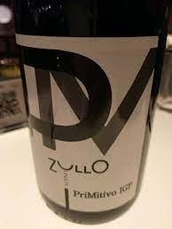
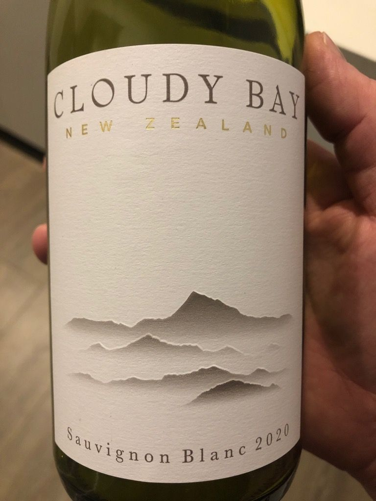

J'étudie à l'Ecole Hôtelière de Lausanne et j'aime passer du temps avec mes ami(e)s et ma famille tout en dégustant de bons repas ainsi que du vin. Si comme moi vous êtes passionné(e)s par ces sujets, mon blog est fait pour vous! Sur mes posts je vous présenterai les vins que j'aime, leur description et avec quoi j'ai apprécié les déguster. N'ayant pas une formation de sommelière, je m'exprime le plus simplement possible. Vous cherchez un vin accessible pour épater vos invités ou pour tester votre nouvelle recette trouvée sur TikTok? Keep scrolling...
J'ai dégusté ce vin lors d'un dîner au restaurant Big Mamma à Lyon. Nous voulions premièrement prendre un Chianti mais il n'était plus disponible (c'est un mal pour un bien...). Federica, notre gentille serveuse venue tout droit de Turin, nous a gentiment proposé ce primitivo des Pouilles. Le pruneau est le goût le plus prononcé à mon gôut. Nous pouvions déjà le sentir avant la dégustation. Les larmes épaisses accrochées au verre montre le sucre et le taux d'alcool élevé, caractéristiques d'un typique vin italien. Nous pourrions le décrire comme un vin puissant avec une certaine douceur. Nous pouvons sentir des fruits noirs mûres en bouche comme au nez. Pour l'accompagner, nous avons débuté avec une pizza The Queen's Gambit (Mozzarella di bufala, jambon cru peduccio di Frate, portobello grillé, basilic frais et huile d'olive). En plat, nous nous sommes partagé les casarecce au pesto basilic et les fameuses mafalde fresche à la truffe fraîche de saison.
J'ai dégusté ce vin pour la première fois lors de mon stage au Beau-Rivage Palace à Lausanne. Nous le vendions au restaurant de la piscine pour l'apéritif ou nous pouvions le recommander pour accompagner un poisson. Je le recommenderais également avec des fruits de mer ou pour accompagner du fromage de chèvre. Depuis que je l'ai goûté, je l'achète régulièrement, en effet, j'apprécie fortement les vins fruité, surtout lorsque les fruits exotiques sont présents. Nous pourrions le décrire comme un vin sec et très fruité. Nous pouvons sentir des fruits exotiques en bouche comme au nez, plus particulièrement le citron vert, le fruit de la passion et l'ananas.
